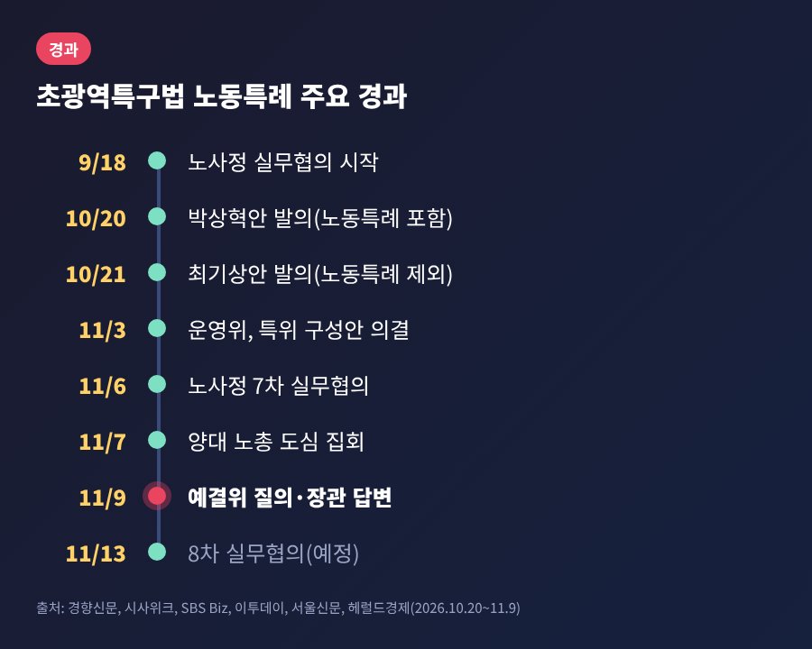
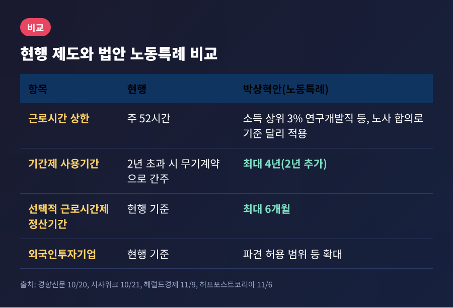
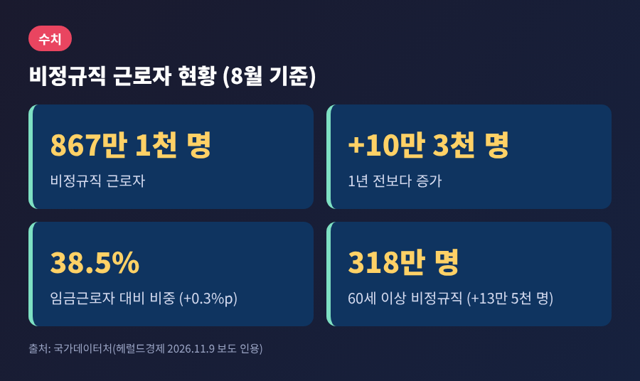
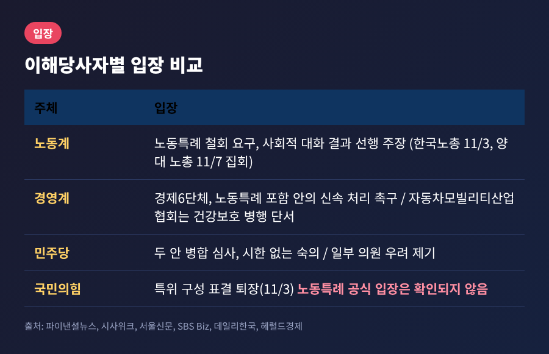
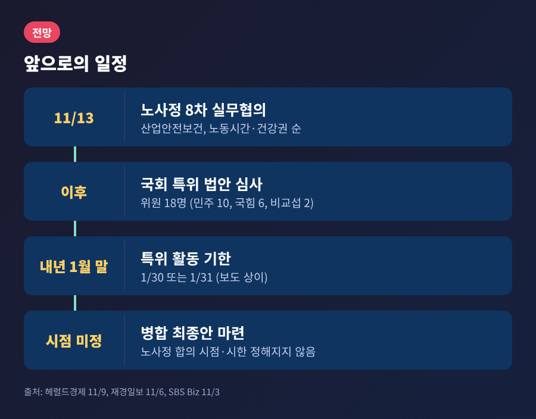

초광역특구법 노동특례, 노동장관이 비정규직 우려 인정한 이유와 쟁점
오늘은 11월 9일 국회 예산결산특별위원회에서 불거진 초광역특구법 노동특례 논란을 정리해 보려 합니다.
여당이 발의한 법안에 주 52시간 예외와 기간제 4년 확대가 담겼고, 질의에 나선 쪽도 답한 쪽도 정부·여당 사람이었다는 점이 눈에 띕니다.
무슨 일이 있었는지, 왜 갈등이 커졌는지, 앞으로 무엇을 지켜봐야 하는지 차례로 살펴보겠습니다.
세 줄 요약
- 11월 9일 예결위에서 이연희 의원(민주당)이 노동특례를 문제 삼았고, 김영훈 노동부 장관은 비정규직 증가 우려가 "사실"이라고 답했습니다.
- 법안에는 소득 상위 3% 연구개발직의 근로시간 기준 조정과 기간제 사용기간 2년에서 4년 확대가 들어 있습니다.
- 노사정 대화는 11월 13일 8차 회의를 앞두고 있으나 핵심 쟁점을 언제 다룰지는 정해지지 않았습니다.
■ 11월 9일 예결위에서 있었던 일
이날 예결위 경제부처 부별 심사에서 이연희 의원은 김영훈 고용노동부 장관에게 초광역특구법안의 노동특례를 물었습니다.
이 의원은 법안 공동발의자로 보도됐습니다.
그는 "비정규직 특구를 만들어서는 안 된다"는 취지로 말했고, 산업 경쟁력과 노동자 건강권은 양자택일이 아니라고 짚었습니다.
김 장관의 답변은 이랬습니다. 비정규직이 늘 수 있다는 우려에 대해 "그런 우려가 있는 것이 사실"이라고 인정했고, "나쁜 일자리에서 지속가능한 혁신은 불가능하다"고 말했습니다. 해당 사안은 노사정 사회적 대화의 주요 의제로 다루겠다고 했습니다.
다만 발의 경위는 구체적으로 알지 못한다고 했으며, 합의 시점도 제시하지 않았습니다.

■ 법안에는 무엇이 담겼나
문제가 된 법안의 정식 명칭은 초광역권 전략산업특구의 지정 및 운영에 관한 특별법안입니다.
반도체·AI 같은 전략산업 투자를 끌어오기 위해 지역을 지정하고 규제 특례를 주는 내용으로, 박상혁 민주당 의원이 10월 20일 대표발의했습니다.
시사위크는 이 안이 약 320개의 규제 특례와 약 40개의 정책 패키지를 담고 있다고 전했습니다.
노동 분야 조항은 크게 네 가지로 알려져 있습니다.
근로소득 상위 3%에 해당하는 연구개발직·관리자·전문가의 근로시간과 연장·야간·휴일 기준을 노사 합의로 달리 적용하는 방안이 첫째입니다. 이른바 '화이트칼라 이그젬션'입니다.
기간제 사용기간을 최대 4년으로 늘리는 방안, 선택적 근로시간제 정산기간을 최대 6개월로 늘리는 방안, 외국인투자기업의 파견 허용 범위를 넓히는 방안이 뒤를 잇습니다.
예전엔 기간제 근로자를 2년 넘게 쓰면 기간의 정함이 없는 계약으로 보았습니다. 이 법안이 통과되면 특례를 적용받는 기업은 같은 근로자를 최대 2년 더 기간제로 쓸 수 있습니다.

이튿날인 10월 21일 최기상 의원은 노동특례를 뺀 법안을 따로 발의했습니다.
민주당은 두 안을 함께 심사해 최종안을 만들겠다는 입장입니다.
한병도 원내대표와 노동부는 시한을 두지 않고 충분히 논의하겠다고 밝혔습니다.
■ 왜 이 문제가 중요한가
비정규직 규모가 이미 적지 않기 때문입니다.
국가데이터처의 8월 기준 통계에서 비정규직 근로자는 867만 1천 명으로, 1년 전보다 10만 3천 명 늘었습니다. 임금근로자 가운데 비중은 38.5%입니다. 60세 이상은 318만 명으로 13만 5천 명 늘었습니다.
김 장관은 증가 배경으로 고령층의 단기계약 증가, 경영 불확실성 속에서 기업이 기간제 채용을 선호하는 경향을 들었습니다.

또 하나는 52시간 상한의 상징성입니다.
노동계는 지역 한 곳에서 시작한 예외가 다른 지역과 업종으로 번질 수 있다고 우려합니다. 경영계는 반대로 개발 일정이 몰리는 시기에 핵심 연구인력이 집중해 일할 수 있어야 한다고 말합니다.
예외 하나가 아니라 앞으로 노동시간 규율을 어떻게 설계할지에 대한 선례가 된다는 점에서 파장이 큽니다.
■ 노동계, 경영계, 정치권의 입장
노동계는 한목소리로 철회를 요구합니다.
한국노총은 11월 3일 민주당과의 정책협의에서 65세 정년연장의 연내 입법과 특구 노동특례 철회를 요구했습니다. 11월 7일에는 양대 노총이 서울 도심에서 각각 집회를 열었고, 한국노총은 진전이 없으면 연말까지 투쟁하겠다고 밝혔습니다.
법안이 발의된 것도 사회적 대화가 진행되던 중이어서, 한국노총은 지난 10월 발의 직후 "기습 발의"라며 회의 연기를 요청했습니다.
경영계의 입장은 다릅니다.
경제6단체는 노동특례를 뺀 최기상안에 유감을 표하고 박상혁안의 신속 처리를 촉구했습니다.
자동차모빌리티산업협회는 11월 9일 성명에서 근로시간 특례를 환영하면서도 건강 보호와 정당한 보상이 함께 가야 한다고 단서를 달았습니다.
현장의 목소리도 한결같지는 않습니다.
허프포스트코리아가 의원실 공개 자료를 인용해 전한 바에 따르면, 삼성전자와 SK하이닉스는 9월 서면 답변에서 현행 제도 때문에 기술개발이 실패한 사례를 든 적이 없고 업무량 급증은 특별연장근로로 "무리 없이 대응하고 있다"고 밝혔습니다. 이 내용은 해당 매체 단일 소스라는 점을 감안하셔야 합니다.

정치권도 갈립니다.
여당 안에서도 박지원 의원은 두 법안을 동시에 낸 것이 "경솔했다"고 말했습니다. 국민의힘은 11월 3일 운영위의 특위 구성 표결에서 절차가 졸속이라며 퇴장했습니다. 다만 노동특례 자체에 대한 국민의힘의 공식 입장은 이번 조사에서 확인하지 못했습니다.
■ 앞으로의 일정과 전망
국회는 11월 5일 본회의에서 초광역특구 특별위원회 구성안을 의결했습니다. 위원은 18명으로 민주당 10명, 국민의힘 6명, 비교섭단체 2명입니다.
활동 기한은 내년 1월 말까지입니다. 종료일은 매체에 따라 1월 30일과 31일로 엇갈려 보도됐습니다.
노사정 쪽에서는 11월 13일 오후 2시 8차 실무협의체가 열립니다.
산업안전보건과 노동시간·건강권 순으로 논의가 시작됩니다. 재경일보는 이 자리에서 52시간 예외와 기간제 4년이 쟁점으로 오를 것으로 전했지만, 헤럴드경제는 핵심 쟁점을 언제 다룰지 정해지지 않았고 연내 합의가 불투명하다고 보도했습니다.

지켜볼 대목은 세 가지입니다.
첫째, 노사정 협의가 입법보다 앞서 결론을 낼 수 있을지입니다.
둘째, 특위 기한이 정해진 만큼 병합 심사에서 노동특례가 어떤 형태로 남을지입니다.
셋째, 산업 경쟁력과 노동권 보호를 함께 만족시킬 보완책, 이를테면 건강권 장치나 기간제 남용 방지 방안이 논의되는지입니다.
정리하면 이렇습니다.
이번 논란은 여당 의원이 여당 법안의 조항을 장관에게 따져 묻는 보기 드문 장면에서 출발했습니다. 법안은 경쟁력과 노동권이라는 두 가치를 한 문서 안에서 부딪히게 했고, 그 해법은 아직 합의된 바 없습니다.
"예외는 쉽게 만들어지고 거두기는 어렵다"는 노동계의 걱정과 "속도가 곧 경쟁력"이라는 경영계의 주장 사이에서, 결국 남는 것은 어떤 근거와 절차로 결론에 이르느냐입니다.
오는 13일 회의가 그 첫 시험대가 될 것입니다.
※ 본 글은 11월 9일 오후까지 보도된 내용을 정리한 것으로, 법안과 협의 내용은 이후 달라질 수 있습니다.